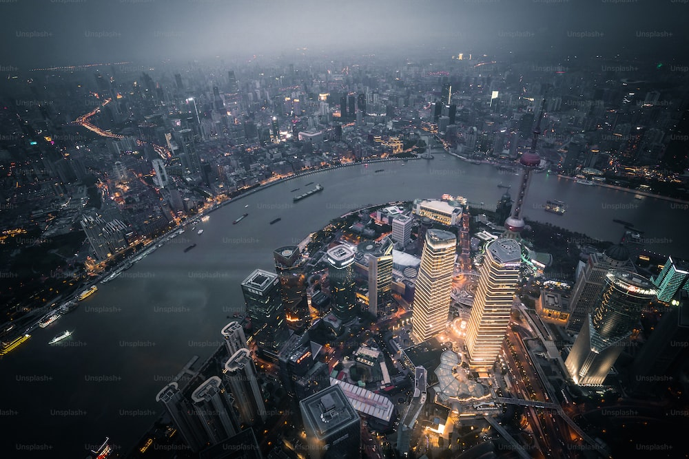
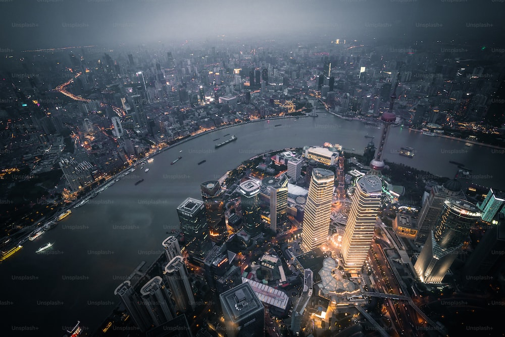

Travel
Rome
Location: Europe


Reasons why I love Rome
- Forum
- Pizza
- Architecture
Rome is one of the oldest metropolitan areas in the world. With a history dating back to 700 BC with the birth of the Roman Empire, the city has maintained its status as a cultural and historical hub of Europe. The city is peppered with ancient monuments, statues, and piazzas from different eras of history. The most famous location, the Colosseum, is touted as one of the seven modern wonders of the world. Rome houses several world famous museums, such as the Borghese and the Vatican Museum. It is also the only city in the world to encompass a recognized country, Vatican City.
Rome is also a great location for food, wine, and leisure. At the heart of Italy, Rome is a central gathering place for a diverse array of Italian cuisine; Neapolitan Pizza from the south, Tuscan wine, and truffle from the north. Rome's most famous dish is carbonara. Beyond the food, Rome has a vibrant nightlife. The Trastevere neighborhood has plenty of bars and clubs for patrons and, just over the river, Centro's shopping district is always bustling.
Photo Gallery


A decorated marble fountain with several roman statues dancing.
An aerial view of a circular forum outlined with ornate columns.
Decorative steps sitting behind a fountain with a small church at the top.
A ruin of large columns supporting a roof surrounded by smaller ruins.
An ornate marble building with bronze statues of angels and chariots along with two Italian flags on each side.
Niagara Falls
Location: North America


Niagara Falls is located on the border between Canada and the United States. Connecting Lake Erie and Lake Ontario, Niagara Falls has the highest flow rate of any waterfall in North America.
Niagara Falls draws in thousands of visitors every year, and for good reason. As such, there are numerous things that you can see while you visit the falls, and it is very easy to make a full trip out of seeing this wonderful sight.
Photo Gallery


The 'Horseshoe'.
A rainbow in Niagara Falls.
A sunset at Niagara Falls.
A colorful view of Niagara Falls.
A distant look at Niagara Falls.
Shanghai
Location: Asia
 

Shanghai, often referred to as the "Pearl of the Orient," is a dynamic and vibrant metropolis in China. As one of the world's largest cities, Shanghai is a dazzling blend of tradition and modernity. With its iconic skyline featuring towering skyscrapers like the Shanghai Tower and the Oriental Pearl Tower, it's no wonder that Shanghai is often considered the financial and economic hub of Asia. Beyond its impressive architecture, the city boasts a rich cultural heritage, reflected in its historic neighborhoods such as the Bund and the French Concession. Here, you can stroll along tree-lined streets, explore colonial-era buildings, and savor a mix of international cuisines. Shanghai is also a global center for fashion, art, and entertainment, with a thriving arts scene, world-class museums, and a bustling nightlife. Visitors to Shanghai are sure to be captivated by its energy, diversity, and the seamless fusion of old and new.
Shanghai is not just a city of skyscrapers; it's a city of contrasts. The serene Yu Garden and its classical Chinese architecture offer a peaceful escape from the bustling streets, while the ultra-modern shopping districts like Nanjing Road cater to the desires of avid shoppers. The city's food scene is a culinary adventure in itself, with a vast array of local and international dishes available from street vendors to Michelin-starred restaurants. Additionally, Shanghai is a gateway to Chinese culture and history, as it hosts numerous festivals, art exhibitions, and performances that showcase China's heritage. Whether you're wandering through ancient temples, exploring the thriving contemporary art scene, or enjoying a traditional tea ceremony, Shanghai promises a multifaceted experience that captures the essence of China's past, present, and future.
Photo Gallery


Yu Garden is a classical garden built in the Ming Dynasty. It is located in Huangpu District, Shanghai, China. It was in the northeast of the old city of Shanghai, bordering Fuyou Road in the north, Anren Street in the east, and Chenghuang Temple and Yu Garden Mall in the southwest.
There are 52 classical revival buildings with different styles standing on the Bund, known as the Bund World Architecture Exhibition Group. It is an important historical site and representative building in modern China, and one of the landmarks of Shanghai. In November 1996, the State Council of the People's Republic of China listed it as the fourth batch of national key cultural heritage protection units.
Shanghai Tower, a huge high-rise landmark skyscraper in Shanghai, is now the tallest building in China and the third tallest building in the world. It was built on November 29, 2008 and the overall construction of the building was completed on March 12, 2016.
The China Art Museum was renovated from the China National Pavilion at the 2010 Shanghai World Expo. Its predecessor was the Shanghai Art Museum, which was founded in 1956. It was relocated to its current location on October 1, 2012 and renamed as the China Art Museum.
Wukang Building, formerly known as I.S.S Normandie Apartment, also known as Dongmeite Apartment, is located at 1842-1858 Huaihai Middle Road, Xuhui District, Shanghai. The building was first built in 1924 with funding from the Universal Savings Association and was designed by renowned architect Hudec, who resided in Shanghai. It is the first corridor style apartment building in Shanghai. In 1994, Wukang Building was selected as the second batch of excellent historical buildings in Shanghai.